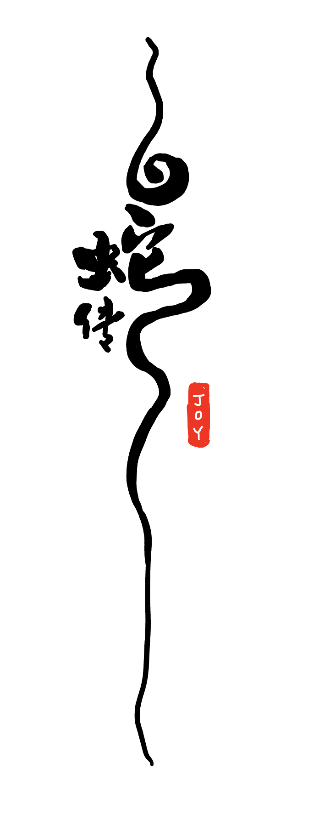
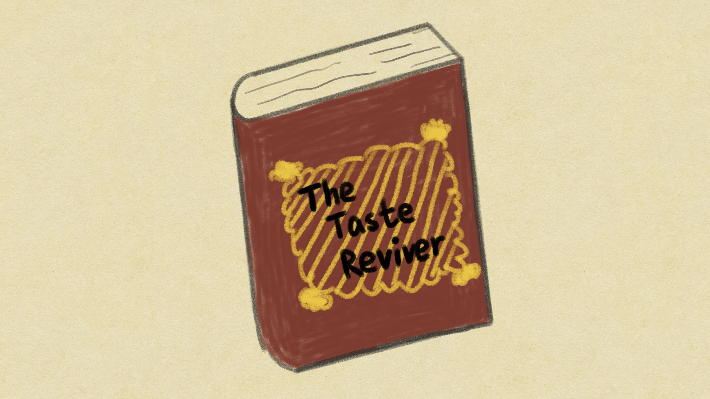
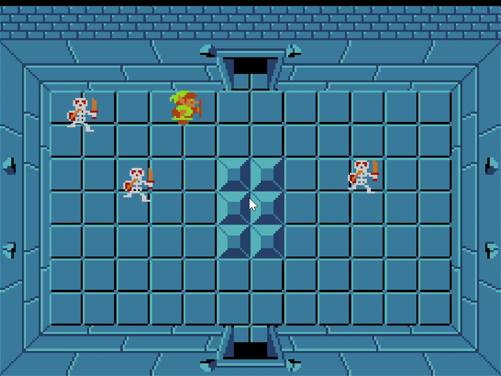

Featured Projects 精选项目

Rhythm Game · Cantonese Opera节奏游戏 · 粤剧文化
White Snake 白蛇传
Reimagining Cantonese Opera through rhythm and interactive storytelling. 以节奏与互动叙事，让年轻玩家走近粤剧。
View Project →查看项目 →
Cooking · Cultural Memory烹饪体验 · 文化记忆
The Taste Reviver味觉复原师
Rediscover childhood memories through a grandmother and Cantonese recipes. 跟随奶奶重寻广式配方，找回童年的味觉记忆。
View Project →查看项目 →
School Project · 2D Action Adventure学校项目 · 2D 动作冒险
Other Project其他项目
A Unity recreation of a classic NES Zelda dungeon, featuring exploration, combat, puzzles, and a boss encounter.使用 Unity 复刻经典 NES 塞尔达地牢，包含探索、战斗、机关解谜与 Boss 战。
View Project →查看项目 →